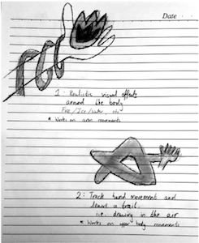
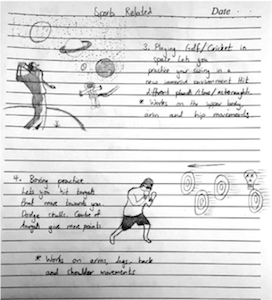
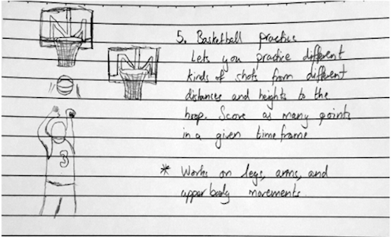

First, we sketched different ways in which AR and Kinect Sensors could be used
  As mentioned in the Research page, our team used a questionnaire to understand which ideas the users liked best. From the results we were able to determine that boxing or golf were the most suitable for the project.
Upon confirming the 2 main ideas, we produced more detailed sketches and storyboards to draft what the games would look like. (Shown Below)
Once we knew what we wanted to achieve, we began learning how to use Unity and link the Kinect Camera to our computers.